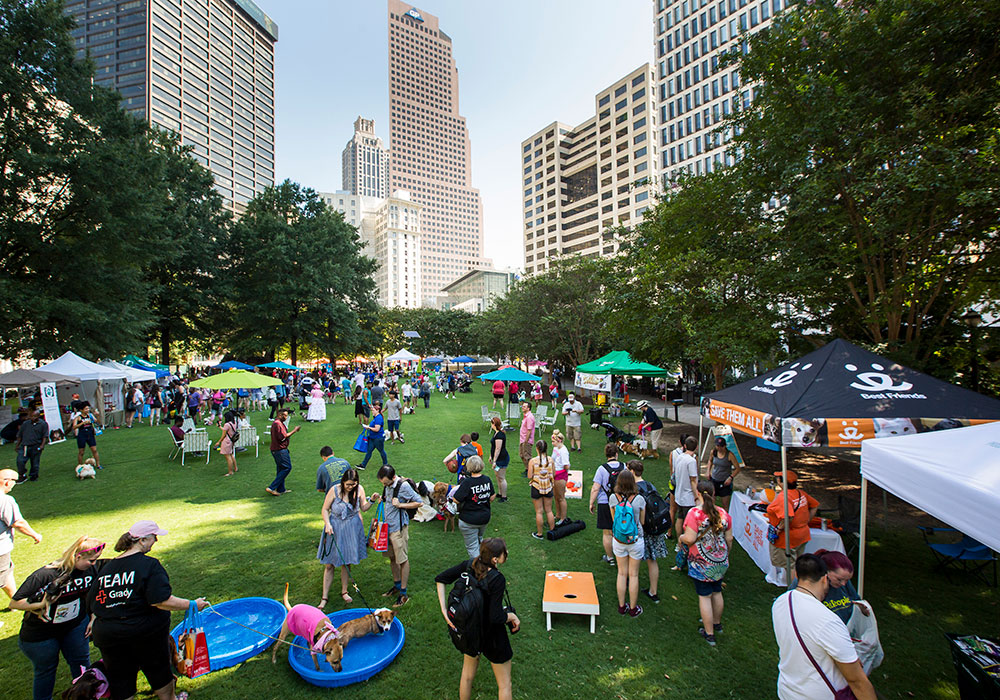
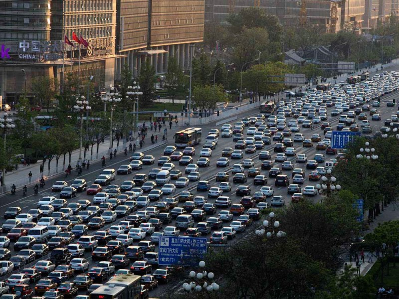

Physical Mobility and Access to Community Storytelling Networks
Examining how mobility infrastructure shapes civic engagement by introducing physical mobility as a structural condition within Communication Infrastructure Theory. How might the way you get to work, school, the library or grocery store enable and/or limit opportunities for social interaction within your community?
Implications for Civic Engagement Opportunities
While online platforms expand civic engagement channels, offline participation remains critical to democracy. This study examines how mobility infrastructure shapes citizens' access to local communication environments, which in turn conditions civic and political engagement. Drawing on Communication Infrastructure Theory (CIT), we conceptualize physical mobility as a spatial context influencing one's integration within the neighborhood information ecology.
Purpose & Significance
Transportation infrastructure is rarely discussed as a communication issue, yet how easily a person can move through their neighborhood directly shapes who they encounter, what local institutions they access, and how embedded they become in community life. This study foregrounds mobility as a structural condition of civic communication, with implications for equity in democratic participation.
Theoretical Framework
Communication Infrastructure Theory (CIT; Kim & Ball-Rokeach, 2006) suggests that neighborhood storytelling networks, composed of interpersonal communication, local media, and community organizations, provide informational resources and social ties that facilitate citizen engagement. This study extends CIT by introducing physical mobility as a key Communication Action Context (CAC) factor, operationalized across four dimensions: transit availability and quality, pedestrian infrastructure quality, and neighborhood connectivity
Research Questions & Hypotheses
H1: ICSN will positively predict (a) place attachment and (b) online civic engagement. H2: Digital media use will positively moderate the relationship between ICSN and (a) place attachment and (b) civic engagement. H3: Higher physical mobility will be positively associated with ICSN. RQ1: Does the relationship between digital media use and civic outcomes vary across different physical mobility conditions?
Methodology
This study adopts a cross-sectional survey design administered via Qualtrics. Participants are undergraduate students from a Midwestern university, asked to report on their high school residential communities. Respondents are first prompted to recall daily travel routines, commonly visited places, and neighborhood accessibility before answering substantive items. Analysis uses moderated mediation (Hayes, 2022 PROCESS macro).
Expected Contribution
This framework highlights the infrastructural conditions of political communication, showing how transit accessibility, walkability, and neighborhood connectivity may shape unequal access to local public-affairs communication. It also resonates with earlier political theory on neighborhood "exit" and "voice," offering a lens to understand fragmented storytelling networks beyond explanations centered on ethnic heterogeneity alone.
Status
Work-in-progress submitted to the AEJMC 2026 Conference Paper Competition under the Research-in-Progress category. Data collection underway (March–April 2026), with analysis and full manuscript preparation planned through summer 2026.
Contextual Imagery


Methods & Tools
- Cross-Sectional Survery
- Moderated Mediation
- Qualtrics
- Policy Analysis
- Communication Infrastructure Theory
- Intensive Individual Interviews
- Interpretation Sessions